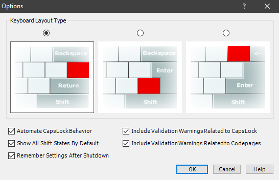
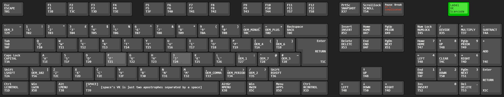

This guide is not an introduction to the basic features of MSKLC, the Microsoft Keyboard Layout Creator. The application is straightforward enough for most people to be able to understand it by playing around with it. Instead, I would like to spread information about lesser-known functionalities.
Everything to follow assumes you have MSKLC's latest version installed, which, at the time of writing, is version 1.4.6000.2
To check MSKLC's version, select "Help" in the menu, and then go on "About".
Download the latest version - Another way to download
In order to be able to work with all of MSKLC's functionalities, make sure to enable all the settings in AltMenu > View > Options:
Choose whatever keyboard layout type you desire. The layout types only differ cosmetically. Note that the only key position that changes location between the three is the key I coloured red.
Let's say you have changed to Dvorak, but are irritated by the new placements of ZXCV. Now copying and pasting is way harder! But there is a solution that requires no other software: You can remap the Virtual Keys (henceforth: VKs) in the '.klc' file in order to achieve that.
Step 0: Open the '.klc' file of your layout in a text editor of your choice.
Step 1: Scroll down to the lines that have symbols/numbers in columns. Look for the column that says 'VK_' at the top, which should be the second column. The letters you see there reflect the layout you opened, so if you type in Dvorak, the letters would read something like PYFCG.
Step 2: You will want to alter the 'VK_' column to carry the Qwerty-layout, rather than whatever layout you have loaded up.
Step 3: Save the file, and load it back up in MSKLC. If you build and install the layout now, you should be able to use Qwerty's shortcuts.
Regarding Step 2: In order to make your life easier, consider opening a Qwerty.klc file in the text editor and take the layout information from there. In order to get your Qwerty.klc file, click AltMenu > File > Load Existing Keyboard > Qwerty, and then save that to a .klc file.
See this page for information on what can go in the 'VK_' column.
While MSKLC GUI lets you remap most keys on your keyboard, it does not allow you to remap keys like Capslock, Backspace, Ctrl, and others. However, there is a way to do just that, with a bit more work:
Step 0: Go to this directory: C:\Program Files (x86)\Microsoft Keyboard Layout Creator 1.4\inc
You might have to look elsewhere if you don't have MSKLC installed on your C-drive.
Step 1: Find the kbd.h file and copy it to your desktop. Consider creating a backup of it somewhere.
Step 2: Open the kbd.h that now sits on your desktop in a text editor. Scroll down to line 1030.
Step 3: Rewrite the VK-information to your liking (details below).
Step 4: Save this edited kbd.h-file, copy, and paste your saved file back into C:\Program Files (x86)\Microsoft Keyboard Layout Creator 1.4\inc, replacing the existing kbd.h-file that lives there.
Step 5: Re-open MSKLC and build your layout as you normally would. If you now use the newly-installed layout, it should operate with the VKs you defined.
If any of these steps did not work out for you, or if you lost your default kbd.h-file, re-installing MSKLC on your C-drive should help.
Generally, MSKLC will always build with whatever .klc file you put in the inc-directory. For instance, if you want to have it build with the default system-keys, copy your kbd.h-backup file back into the inc-directory.
Details for Step 3: The Virtual-Key (VK) data is generally stored in the column that reads "kbd type 4" (see below for exceptions). So, for instance, the key with scancode T01 has the VK-entry "ESCAPE", which is the escape-key. We can simply edit these text entries in order to remap our VKs. An example: Let's say you want to swap your capslock- and backspace-keys. Using the handy VK-reference below, you will see that the capslock-VK is "CAPITAL" (scancode T3A), while backspace's is "BACK" (scancode T0E). Now, just swap these two text entries, and return to Step 4 to finish the process. As far as I know, you can go pretty wild with re-defining VKs: Duplicate entries seem fine.
To make our lives a bit more difficult, however, there are two types of scancodes: ones that are defined equally for all keyboard-types, and ones that are different depending on the keyboard model. You will see those keys differ by designation ( EQ for universal VKs, NE for differing VKs) and by the amount of columns they have filled in: EQ needs only one, NE needs all of them. Now, if you want to move an NE-key to an EQ-key, or vice-versa, also make sure to swap the designations in the beginning. Here is an example: Let's say you want to swap the F12-key with the Left-Shift-key. Despite your questionable layout choices, we now also have to take the NE- and EQ-designations into account: "F12" (scancode T58) is an NE-key, while "LSHIFT" (scancode T2A) is an EQ-key. If you swap those entries around, make sure to also swap the NE- and EQ-designations. This is what you could want to end up with:
#define T2A _NE(F12, LEFT, F12, F12, _none_, OEM_102 )
[...]
#define T58 _EQ( LSHIFT )
You could also try to just remove F12's NE-designation completely, replacing it with EQ and only leaving the one, relevant column (F12).
Below you can see an image that shows you the scancode and default VK-entry of a given key (see the green key for a legend). Click the image for a larger view. It was created by me using this handy tool, and since according to the license I am "free to use the [image] for any use whatsoever", I hereby put it in the public domain. The .json-code for the keyboard layout can be found here.
Additionally, you can find information about some VK-names here.
Using AutoHotKey's "key history and script info" feature can help identify codes, as well.
Lastly, you can also view some VK-names by hovering over the respective key with your mouse in MSKLC, although that information does not seem to be congruous with other sources.
Using the AltGr layer in MSKLC can seem like a powerful tool to easily implement layers. By remapping the AltGr-key, you can move the layer-access to wherever you want, granting you even more power. However, since somewhere down the line, the AltGr-key apparently was just a bodged solution, it does not come without issues. The problem I experienced was, that when an AltGr-combination was pressed, it would cause the Alt-key to remain stuck in certain situations, until the Alt-key was pressed manually. Some applications or websites just didn't accept my AltGr-layer altogether, instead interpreting it as me trying to use a ctrl-shortcut. By far the best, and simplest, solution I found was to use an AutoHotKey-script. AHK is basically an old input-manipulation software. My solution was to simply to have it press Alt and Ctrl whenever I pressed the new AltGr-key, and then release Alt and Ctrl once I released the AltGr-key. This is not perfect, there are still occasional problems. But alas, they are less frequent, and I am finally allowed to use aforementioned applications and websites with my AltGr-layer. My current AHK-script can be found here (make sure to replace SC039 with your scancode. If your AltGr-key is on Capslock, put SC03A instead. If it is the right Windows-key, put SC15C instead.).
Technically, you can see all your layouts in Window's Apps/Programs-list. However, uninstalling the layouts from there can lead to them being bricked in place. That means, the layout is no longer usable, but some data of it still haunts your harddrive. The effects are annoying at most: the layout won't disappear from the Apps/Programs-list, and you won't be able to install a new layout with the same name.
The healthier way to uninstall layouts is to keep the .msi and .exe you got when you installed your layout. If you wish to uninstall the layout, just execute the .exe file again, and you should be done. This probably won't work after you tried to do it on the Apps/Programs-list. If you lost your files, either look in the trashbin, or try to re-create them by building the layout again.
If a layout remains after uninstallation (possible if a layout is repaired) then it can be removed via the Registry Editor. Run regedit.exe and go to HKEY_LOCAL_MACHINE\SYSTEM\CurrentControlSet\Control\Keyboard Layouts to view the complete list of keyboard layouts. At the bottom of the list, folders starting with 'a' are custom layouts which can be deleted altogether.
There is one last resort if layout data is haunting your harddrive. I do not recommend you do it, because it involves modifying system-files, and it has a success rate of less than 50%, in my experience (that is 50% of successfully removing your layouts from the list, not 50% of you successfully not FUBAR-ing your system). But if you must, here is what you can try to do:
Go to these two directories: C:\Windows\System32 and C:\Windows\SysWOW64. In both directories, you should be able to find a file YOURLAYOUT.dll, with whatever name you specified in MSKLC. Look for the file in both directories (sorting alphabetically can help), and then delete the file from both. Don't delete any other files, because that can brick your system. Restart once you are done, and hope for the best.
MSKLC can do a lot for you, but it is limited: It only allows for one layer, it doesn't allow for layers on system-keys, it does not allow some characters to be specified as input, and generally it is outdated and difficult to use. Here are two alternatives you might want to check out:
AutoHotKey can take inputs and produce outputs. If you want Shift-F5 to input some recurring text, AHK is the best way. If you want your PrntScrn to open the calculator app, use AHK. If you want guaranteed success with 0 failure, and a modern language that makes layers and key-sequences easy, probably look elsewhere. AHK is still powerful, and it being easy to use justifies taking a look if your desires are simple.
EPKL is something that I should take a more in-depth look at. I have heard only good things about it, and it seems way more modern and flexible than MSKLC and AHK, allowing for lots of layers and portability.
I would like to thank DreymaR for supplying me with information regarding MSKLC, and for developing EPKL. I would like to thank Michael Scott Kaplan for creating MSKLC. And I would like to thank all the layout-enthusiasts, especially the Discord folks, for being interested in this frankly esoteric and niche topic.
If you wish to contact me for feedback or questions, please hit me (Henri) up with a message on Discord.
■